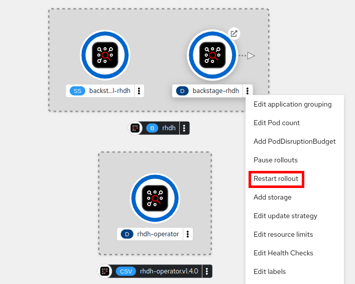

Basics of Red Hat Developer Hub Configuration
Recall that RHDH is deployed as an immutable container on OpenShift. Upgrading RHDH to new versions deploys a new container, so the configuration is maintained outside the container as YAML files, which are parsed at container start up and the state persisted to the PostgreSQL database used by RHDH.
RHDH uses a number of different YAML files for configuration. Various runtime variables, plugin configuration, and other behaviors can be controlled using these YAML configuration files.
| The sections in this chapter assume you have installed RHDH using the operator. If you used a Helm chart for installation, the configuration should more or less work with minimal changes. Consult the product documentation for details. |
Exploring the default RHDH Configuration
Let us briefly inspect the OpenShift resources created by the RHDH operator after installation.
Log in as the OpenShift cluster administrator user in the web console and switch to the Developer perspective.
Click on Topology in the left sidebar, and then expand the hamburger menu (three vertical dots) next to the rhdh Backstage custom resource (CR) to select the Edit Backstage option
In the Backstage details page, click the Resources tab to view the resources created by the operator installation.
The two ConfigMap resources, backstage-dynamic-plugins-rhdh and backstage-appconfig-rhdh are used to configure the dynamic plugins, and the overall configuration of RHDH respectively.
The default.app-config.yaml configuration stored in the backstage-appconfig-rhdh ConfigMap is as follows:
data:
default.app-config.yaml: |
backend:
auth:
keys:
# This is a default value, which you should change by providing your own app-config
- secret: "pl4s3Ch4ng3M3"
| This default.app-config.yaml section should not be edited directly to avoid problems during operator upgrades. Instead you must define your own custom app-config-rhdh.yaml configuration file as a separate ConfigMap resource, and override the default configuration values. |
Application Configuration Files (app-config-*.yaml)
Recall that an instance of RHDH is called an "App" (short form of Application), and the instance is configured using YAML files. RHDH runs as a container on OpenShift, so this and other configuration files for RHDH should be created as OpenShift ConfigMaps and mounted inside the container.
|
Do NOT hard code sensitive and confidential values in the app-config.yaml files! Instead, use environment variable placeholders. You can then store plain text values using ConfigMaps and confidential values like passwords, API keys, encrypted tokens and other sensitive information using Secrets. |
The configuration is validated using JSON Schema definitions. You can enable or disable components and plugins, and configure them using these app-config-*.yaml files.
The configuration is shared between the frontend and backend. Values that are common between the two needs to be defined only once, for example, the backend.baseUrl, which defines the root URL of the backend REST API.
Configuration is stored in YAML files where the defaults are app-config.yaml and app-config.local.yaml for locally overriding configuration variables from the default configuration file. Other sets of files can by loaded by passing --config flags.
It is possible to have multiple configuration files, to support different environments (Development, QA, Staging, Production, and more), and also to override configuration that is for specific components and plugins. The configuration files to load are selected using a --config flag, and it is possible to load any number of files.
If no --config flags are specified, the default behavior is to load app-config.yaml. Note that if any --config flags are used, the default app-config.yaml file is NOT loaded. To include it, you need to explicitly pass it as --config arguments, for example:
The RHDH container image uses an entrypoint defined as follows for starting the backend container:
node packages/backend --config app-config.yaml \ --config app-config.example.yaml \ --config app-config.example.production.yaml
It is also possible to supply configuration through environment variables, for example, consider the YAML configuration snippet like below:
app:
baseUrl: https://${HOST}
You can override the value of baseUrl by passing an environment variable named APP_CONFIG_app_baseUrl=https://staging.example.com to the RHDH container.
The environment variable name must be prefixed with APP_CONFIG and the nested YAML attributes separated with underscore("_") symbol.
| This approach should be used sparingly, usually just for temporary overrides during development. |
Configuration File Precedence
Configuration methods have different priority, higher priority methods replace values from configurations with lower priority. The priority of the configurations is determined by the following rules, in order:
-
Configuration from the APP_CONFIG_ environment variables has the highest priority, followed by files.
-
Files loaded with
--configflags are ordered by priority, where the last flag has the highest priority. -
If no
--configflags are provided, app-config.local.yaml has higher priority than app-config.yaml.
Lab: Adding a Custom app-config YAML File
It is a good practice to override the default.app-config.yaml file using your own custom configuration file embedded inside a ConfigMap, and passing it as an argument using --config flags. At runtime, the values from the default configuration are merged with the values from your custom configuration file.
To create the custom configuration file, do the following:
-
Create a new ConfigMap named app-config-rhdh resource in the same OpenShift project where you installed RHDH (devhub).
-
Click on
ConfigMap→ clickCreate ConfigMap Figure 3. ConfigMap
Figure 3. ConfigMap -
Select
YAMLview and paste the following YAML snippet.kind: ConfigMap apiVersion: v1 metadata: name: app-config-rhdh data: "app-config-rhdh.yaml": | app: title: Red Hat Developer Hub baseUrl: https://backstage-rhdh-devhub.apps.cluster-<guid>.dynamic.redhatworkshops.io (1) backend: auth: keys: - secret: "${BACKEND_SECRET}" (2) baseUrl: https://backstage-rhdh-devhub.apps.cluster-<guid>.dynamic.redhatworkshops.io (1) cors: origin: https://backstage-rhdh-devhub.apps.cluster-<guid>.dynamic.redhatworkshops.io (1)1 The RHDH URL. Replace guid with your unique guid from RHDP 2 A secret to define the mandatory RHDH backend authentication key
-
-
Click
Createto create the ConfigMap. -
The custom application configuration file contains a sensitive environment variable, named BACKEND_SECRET. This variable contains a mandatory backend authentication key that Developer Hub uses to reference an environment variable defined in an OpenShift Container Platform secret. You must create a secret, named rhdh-secrets, and reference it in the Developer Hub CR.
-
Click Secrets > Create → Key/value secret:
Figure 4. Create Secret -
Enter rhdh-secrets in the
Secret namefield, enter BACKEND_SECRET in theKeyfield. For the Value field, open a new command line terminal and generate a base64 encoded string using the following command:node -p 'require("crypto").randomBytes(24).toString("base64")' -
Copy the randomly generated string to the Value field, and then click
Createto create the secret. Figure 5. Create a new secret
Figure 5. Create a new secret
-
-
Now that you have created your own custom configuration file with an embedded secret, you need to reference the new custom configuration file in the backstage custom resource (CR) and restart the RHDH container for the changes to take effect. Click on
Topologyin the left sidebar, and then expand the hamburger menu (three vertical dots) next to therhdhBackstage custom resource (CR) to select theEdit BackstageoptionFigure 6. Edit Backstage CRYou will get the Edit Backstageoption only if you have installed the Developer Hub using RHDH operator. If you have installed Developer Hub using Helm Charts, you will need to edit Helm Charts. -
Reference the
app-config-rhdhConfigMap and therhdh-secretssecret in the CR:apiVersion: rhdh.redhat.com/v1alpha3 kind: Backstage metadata: creationTimestamp: '2025-01-09T11:28:30Z' generation: 1 managedFields: - apiVersion: rhdh.redhat.com/v1alpha3 fieldsType: FieldsV1 fieldsV1: 'f:spec': .: {} 'f:application': .: {} 'f:appConfig': .: {} 'f:mountPath': {} 'f:extraFiles': .: {} 'f:mountPath': {} 'f:replicas': {} 'f:route': .: {} 'f:enabled': {} 'f:database': .: {} 'f:enableLocalDb': {} manager: Mozilla operation: Update time: '2025-01-09T11:28:30Z' - apiVersion: rhdh.redhat.com/v1alpha3 fieldsType: FieldsV1 fieldsV1: 'f:status': .: {} 'f:conditions': {} manager: manager operation: Update subresource: status time: '2025-01-09T11:28:30Z' name: rhdh namespace: devhub resourceVersion: '57412' uid: ed5c1be6-c7c4-4d49-b0b5-67b83a84a878 spec: application: appConfig: mountPath: /opt/app-root/src configMaps: - name: app-config-rhdh extraEnvs: secrets: - name: rhdh-secrets extraFiles: mountPath: /opt/app-root/src replicas: 1 route: enabled: true database: enableLocalDb: true status: conditions: - lastTransitionTime: '2025-01-09T11:28:30Z' message: '' reason: Deployed status: 'True' type: Deployed -
Click
Saveto save the changes to the Backstage CR. -
Switch to the
Topologyview, and expand the menu next to thebackstage-rhdhpod. ClickRestart rolloutto restart the RHDH pod.Figure 7. Restart RHDH pod to re-read configuration value changesWait for the RHDH pod to restart (It may take a few minutes). Ensure that the pod is restarted without any errors.
-
To troubleshoot failed startup, click on the
backstage-rhdhpod, and then click theResourcestab. ClickView logsto view the pod logs.Figure 8. View Pod logs-
Ensure that you correctly indent the CR yaml file when referencing the secret and ConfigMap. Incorrect indentation may cause the pod restart to fail.
-
Throughout the rest of the course, you will edit the app-config-rhdh ConfigMap to configure and enable plugins for RHDH.
Whenever you change the configuration in the app-config-rhdh ConfigMap, or create/edit any new secrets, you can force RHDH to re-read the configuration by clicking on the RHDH pod in the Topology page and then selecting Restart rollout.
You can also scale down the RHDH pod to zero (0), and then scale it up back to one or more to reload the configuration.